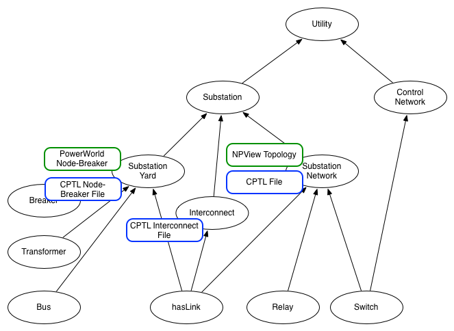

CyPSA Use Cases - Asset Inventory
This document outlines a workflow that may
be expressed via a particular user interface
(e.g. web interface). The workflow itself, however,
should ideally be robust to new interfaces and interface
designs. We look at a workflow as a sequence
of steps taken by a practitioner. Our goal is to
streamline these practitioner workflows via the CyPSA
tool. For our purposes, many of these use cases will be
realized in terms of the CyPSA 8 Substation Model.
CyPSA Use Cases - Asset Inventory Workflow
For now, assume that the user is an IT System Administrator
who wants to understand more about her substation network.
- User authenticates to the system as an IT System
Administrator. This may be implemented by a variety of
authentication schemes (user login).
- The substation network is traditionally documented in a
static Visio file. In contrast, CyPSA can load that same
information from a static JSON file from the 8 substation
model. Two things need to be implemented here: (a) how to
load the model, and (b) how to view the model
(e.g. toggle between graph-based or tabular views).
- The vertices and edges within the model, once loaded, are
tagged with provenance metadata (e.g. where did this data come
from?).
Now imagine that the same user wants to better understand the
importance of each cyber asset relative to its relations to
assets in the substation yard.
- User needs to authenticate to the system as a Power
Engineer (as well as an IT System Administrator). This
workflow step may be implemented by a variety of
authentication schemes (e.g. user login).
- Load a version of the power node-breaker model and merge
it with that of the JSON file (via static node
interconnections). This may be implemented by viewing the
data graphically or in a tabular format.
- The vertices and edges within the model, once loaded, are
annotated with provenance metadata.
So far, we have seen assets loaded from a static model. This
is visually displayed in the following diagram in which the
CyPSA Object Model is
annotated with data sources for those types of information.
Blue boxes correspond to CPTL models for each of the
system components pulled from a filesystem. In contrast, green
boxes correspond to services that dynamically provide data such
as PowerWorld and NPView.

- Register a PowerWorld data source instance. This may be
implemented as a data source wizard that includes the socket
and authentication information necessary to connect to a
PowerWorld service endpoint.
- Register an NPView data source instance. This may be
implemented as a data source wizard that includes the socket
and authentication information necessary to connect to an
NPView service endpoint.
- The new data sources will populate the inventory of
assets.
- Select a version of the substation yard provided by the
new PowerWorld service endpoint and load the information.
- Select assets with just a PowerWorld or FileSystem tag to
see differences between the two models. Selection should
persist across different expressions of the model
(e.g. graphical or tabular).
- Select a version of the substation network provided by
the new NPView service endpoint and load the information.
- Select assets with just an NPView tag to see differences
between the two models. Selection should again persist across
different expressions of the model (graphical or
tabular).
Data Source Management
Roles and User Profiles
We can have the equivalent of cascading stylesheets for the
CyPSA data so that users and/or roles and visualize the
information as needed.
Annotation Services
There are a wide variety of annotation services provided by
CyPSA and these include the following. At an abstract level,
these annotations correspond to vertex and edge attributes.
- Annotate model with Vulnerability Information. NB that
paths themselves, at an appropriate level of abstraction, may
be useful to search for as 'attack patterns' in
infrastructure.
- Annotate model with configuration information.
- ...
Workflow Generation (History)
By logging at the appropriate level of abstraction, the
CyPSA tool can be used to script workflows performed by
practitioners.
Workspaces